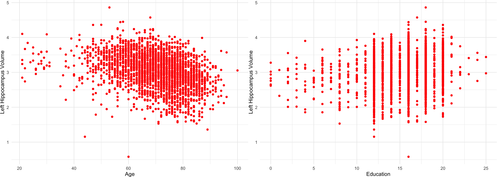
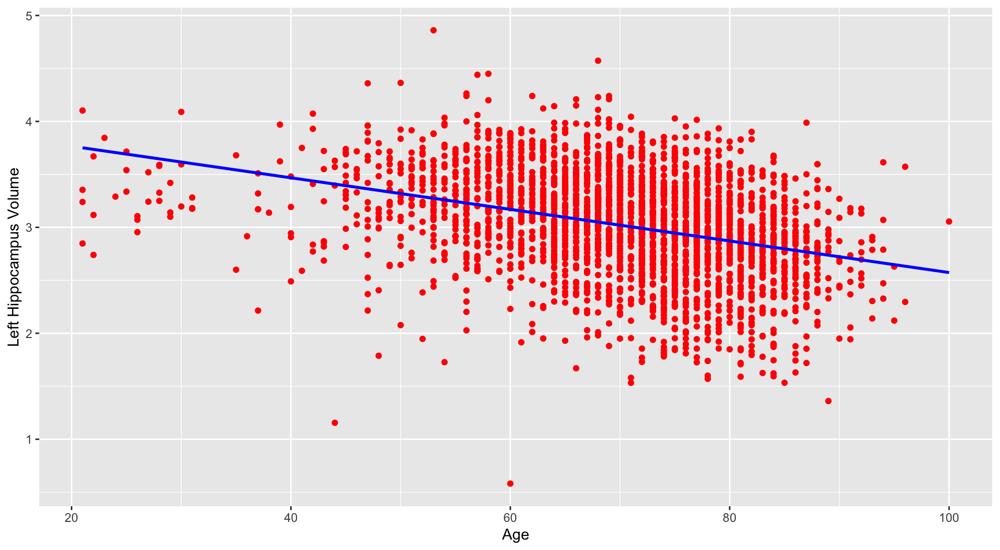
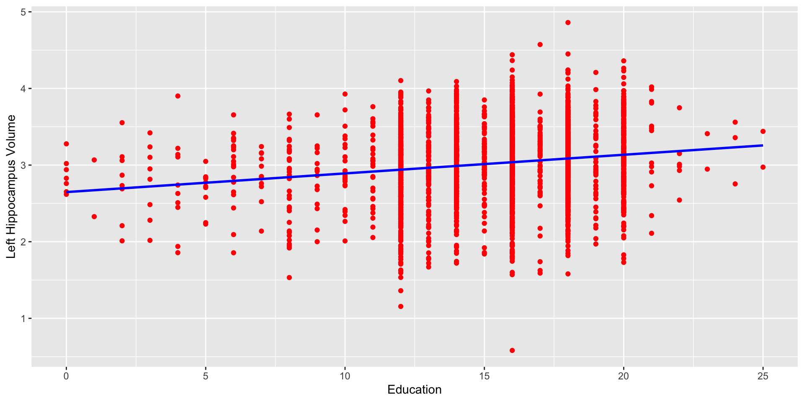
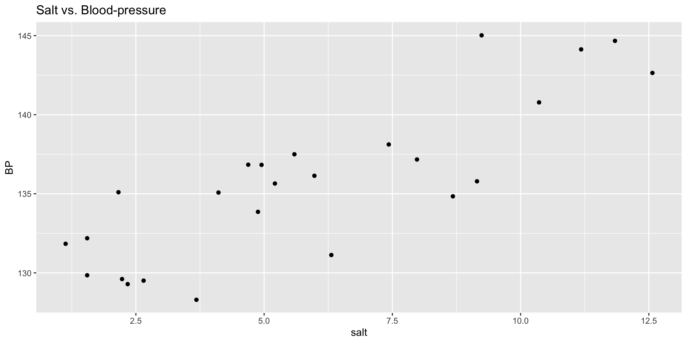

Call:
lm(formula = lhippo ~ age, data = alzheimer_data)
Residuals:
Min 1Q Median 3Q Max
-2.58855 -0.28598 0.01999 0.31504 1.58641
Coefficients:
Estimate Std. Error t value Pr(>|t|)
(Intercept) 4.0639626 0.0543632 74.76 <2e-16 ***
age -0.0149051 0.0007657 -19.46 <2e-16 ***
---
Signif. codes: 0 '***' 0.001 '**' 0.01 '*' 0.05 '.' 0.1 ' ' 1
Residual standard error: 0.4593 on 2698 degrees of freedom
Multiple R-squared: 0.1231, Adjusted R-squared: 0.1228
F-statistic: 378.9 on 1 and 2698 DF, p-value: < 2.2e-16Linear Regression in R
Data Science in Biomedical Sciences
UCI COSMOS 2026
Noah Benjamin
(adapted material from Zhaoxia Yu and Mine Dogucu)
Linear Regression in R
- Now that we have learned about regression models, we’ll build a multiple regression model for predicting the left hippocampus volume of the brain, labeled as
lhippo, through two predictors, namelyageandeduc.
- Remember that in the general, a multiple linear regression model with \(p\) explanatory variables can be presented as:
\[\begin{equation*} \hat{y} = a + b_{1}x_{1} + b_{2}x_{2} + \cdots + b_{p}x_{p}. \end{equation*}\]
- The left hand side of this model is the response variable, a numerical continuous variable.
Why would we investigate this relationship?
- Recall the left hippocampus volume
lhippois likely to shrink as Alzheimer’s severs.
- Also, while the progress of the disease is a function of age, it is possible that education could have a reverse effect on the progress of the disease.
- To fit linear models all we need to do is to apply the
lm()command in R.
- First, though, we will begin by plotting the response versus each predictor, separately.
Plotting response vs. predictor
(left) lhippo vs. age , lhippo vs. educ (right)

Now let’s do some linear regression!
lhippo vs. age
Here is the regression of lhippo versus age:
lhippo vs. age
We can nicely output the lm() to a table:
| Characteristic | Beta | 95% CI | p-value |
|---|---|---|---|
| age | -0.015 | -0.016, -0.013 | <0.001 |
| Abbreviation: CI = Confidence Interval | |||
Let’s take a look at the fitted line

lhippo vs. education
Call:
lm(formula = lhippo ~ educ, data = alzheimer_data)
Residuals:
Min 1Q Median 3Q Max
-2.45617 -0.30433 0.01738 0.33743 1.77443
Coefficients:
Estimate Std. Error t value Pr(>|t|)
(Intercept) 2.647647 0.042951 61.644 <2e-16 ***
educ 0.024351 0.002743 8.877 <2e-16 ***
---
Signif. codes: 0 '***' 0.001 '**' 0.01 '*' 0.05 '.' 0.1 ' ' 1
Residual standard error: 0.4835 on 2698 degrees of freedom
Multiple R-squared: 0.02838, Adjusted R-squared: 0.02802
F-statistic: 78.8 on 1 and 2698 DF, p-value: < 2.2e-16Again, as a table:
| Characteristic | Beta | 95% CI | p-value |
|---|---|---|---|
| educ | 0.02 | 0.02, 0.03 | <0.001 |
| Abbreviation: CI = Confidence Interval | |||
Some ways we can customize our table digits
| Characteristic | Beta | 95% CI | p-value |
|---|---|---|---|
| educ | 0.024 | 0.019, 0.030 | <0.001 |
| Abbreviation: CI = Confidence Interval | |||
| Characteristic | Beta | 95% CI | p-value |
|---|---|---|---|
| educ | 0.024 | 0.019, 0.03 | <0.001 |
| Abbreviation: CI = Confidence Interval | |||
Plotting the fitted line
Let’s see the fitted line:

Regressing on both variables
Here is the regression of lhippo versus age and education:
Call:
lm(formula = lhippo ~ age + educ, data = alzheimer_data)
Residuals:
Min 1Q Median 3Q Max
-2.59525 -0.28746 0.01681 0.31416 1.54719
Coefficients:
Estimate Std. Error t value Pr(>|t|)
(Intercept) 3.7348265 0.0709453 52.644 < 2e-16 ***
age -0.0142527 0.0007643 -18.649 < 2e-16 ***
educ 0.0185428 0.0026010 7.129 1.29e-12 ***
---
Signif. codes: 0 '***' 0.001 '**' 0.01 '*' 0.05 '.' 0.1 ' ' 1
Residual standard error: 0.4551 on 2697 degrees of freedom
Multiple R-squared: 0.1394, Adjusted R-squared: 0.1387
F-statistic: 218.4 on 2 and 2697 DF, p-value: < 2.2e-16Regressing on both variables
| Characteristic | Beta | 95% CI | p-value |
|---|---|---|---|
| age | -0.014 | -0.016, -0.013 | <0.001 |
| educ | 0.019 | 0.013, 0.024 | <0.001 |
| Abbreviation: CI = Confidence Interval | |||
Cross-Validation
Cross-Validation
- Let’s try to evaluate the performance of our model by calculating its accuracy or mean squared error (MSE), depending on whether we are dealing with a linear regression or logistic regression model.
- Cross-validation is a commonly used technique to achieve this evaluation. It is an old approach, devised by statisticians Fred Mosteller and John Tukey in 1968.
- The process involves splitting the data into training and validation (or test) sets. We then fit or train the model using the training portion of the dataset. The accuracy or MSE is then calculated by comparing the predictions made by the model on the validation set to the actual values.
Metrics
- For linear regression models, we typically use the mean squared error (MSE) to measure the quality of predictions. The lower the MSE, the better the model’s performance. The MSE represents the average squared difference between the predicted values and the true values.
- For classification problems (e.g., logistic regression), we use accuracy as a metric to assess the model’s performance. Accuracy represents the proportion of correctly classified instances out of the total instances in the validation set. The higher the accuracy, the better the model’s performance.
Splitting the data
To split the data into training and validation sets using the rsample package in R, you can use the initial_split() function. Here’s an example of how you can split the data:
Linear Regression Model Evaluation
“Training”
After splitting the data into train and test, we train (“fit”, in our case) the model using training data:
Call:
lm(formula = lhippo ~ age + educ, data = train_data)
Residuals:
Min 1Q Median 3Q Max
-2.59635 -0.28271 0.01207 0.30870 1.55249
Coefficients:
Estimate Std. Error t value Pr(>|t|)
(Intercept) 3.7664975 0.0837727 44.961 < 2e-16 ***
age -0.0140749 0.0009099 -15.468 < 2e-16 ***
educ 0.0159653 0.0030390 5.254 1.66e-07 ***
---
Signif. codes: 0 '***' 0.001 '**' 0.01 '*' 0.05 '.' 0.1 ' ' 1
Residual standard error: 0.4524 on 1886 degrees of freedom
Multiple R-squared: 0.1329, Adjusted R-squared: 0.132
F-statistic: 144.5 on 2 and 1886 DF, p-value: < 2.2e-16“Training”
After splitting the data into train and test, we train (“fit”, in our case) the model using training data:
| Characteristic | Beta | 95% CI | p-value |
|---|---|---|---|
| age | -0.014 | -0.016, -0.012 | <0.001 |
| educ | 0.016 | 0.010, 0.022 | <0.001 |
| Abbreviation: CI = Confidence Interval | |||
Evaluating our model on test data
Now, let’s use the trained model to make predictions on the validation data:
- To evaluate the performance of our model, we can calculate the Mean Squared Error (MSE) between the predicted values and the actual values:
[1] 0.2133323Question:
What happen to MSE when we change the ratio we split the data?
What does MSE actually represent here? Do we know what MSE is good/bad?
Did we account for all of the relevant variables?
Additional lm() example
Let’s load in some new data
Additional lm() example
Plot salt against BP

Additional lm() example
Let’s look at the fit line

Additional lm() example
Investigate the relationship between salt and blood pressure
Call:
lm(formula = BP ~ salt, data = saltBP)
Coefficients:
(Intercept) salt
128.616 1.197
Call:
lm(formula = BP ~ salt, data = saltBP)
Residuals:
Min 1Q Median 3Q Max
-5.0388 -1.6755 0.3662 1.8824 5.3443
Coefficients:
Estimate Std. Error t value Pr(>|t|)
(Intercept) 128.616 1.102 116.723 < 2e-16 ***
salt 1.197 0.162 7.389 1.63e-07 ***
---
Signif. codes: 0 '***' 0.001 '**' 0.01 '*' 0.05 '.' 0.1 ' ' 1
Residual standard error: 2.745 on 23 degrees of freedom
Multiple R-squared: 0.7036, Adjusted R-squared: 0.6907
F-statistic: 54.59 on 1 and 23 DF, p-value: 1.631e-07Additional lm() example
We can also use the glm() function. You’ll use it more tomorrow!
Call: glm(formula = BP ~ salt, data = saltBP)
Coefficients:
(Intercept) salt
128.616 1.197
Degrees of Freedom: 24 Total (i.e. Null); 23 Residual
Null Deviance: 584.8
Residual Deviance: 173.4 AIC: 125.4Residual
2.5 % 97.5 %
(Intercept) 126.3369606 130.895834
salt 0.8617951 1.531993Multiple Linear Regression example
Call:
glm(formula = bwt ~ age + factor(smoke), data = birthwt)
Coefficients:
Estimate Std. Error t value Pr(>|t|)
(Intercept) 2791.224 240.950 11.584 <2e-16 ***
age 11.290 9.881 1.143 0.255
factor(smoke)1 -278.356 106.987 -2.602 0.010 *
---
Signif. codes: 0 '***' 0.001 '**' 0.01 '*' 0.05 '.' 0.1 ' ' 1
(Dispersion parameter for gaussian family taken to be 514367.1)
Null deviance: 99969656 on 188 degrees of freedom
Residual deviance: 95672288 on 186 degrees of freedom
AIC: 3026.8
Number of Fisher Scoring iterations: 295% confidence intervals for coefficients
2.5 % 97.5 %
(Intercept) 2318.971775 3263.47685
age -8.077542 30.65676
factor(smoke)1 -488.046399 -68.66586Interpretation
\(\hat{y}_{weight} = b_0 + b_1 \times age + b_2 \times smoker\)
\(\hat{y}_{weight} = 2791.2 + 11.3 \times age - 278.4 \times smoker\)
- The intercept in multiple linear regression model is the expected (average) value of the response variable when all the explanatory variables in the model are set to zero simultaneously.
- In the above example, the intercept is \(a = 2791\), which is obtained by setting age and smoking to zero.
- We might be tempted to interpret this as the average birthweight of babies for nonsmoking mothers (smoke=0) with age equal to zero. In this case, however, this is not a reasonable interpretation since mother’s age cannot be zero.
Interpretation
\(\hat{y}_{weight} = b_0 + b_1 \times age + b_2 \times smoker\)
\(\hat{y}_{weight} = 2791.2 + 11.3 \times age - 278.4 \times smoker\)
- We interpret \(b_j\) as our estimate of the expected (average) change in the response variable associated with a unit increase in the corresponding explanatory variable \(x_j\) while all other explanatory variables in the model remain fixed.
- For the above example, the point estimate of the regression coefficient for age is \(b_1 = 11\), and the estimate of the regression coefficient for smoke is \(b_2 = −278\).
Interpretation
\(\hat{y}_{weight} = b_0 + b_1 \times age + b_2 \times smoker\)
\(\hat{y}_{weight} = 2791.2 + 11.3 \times age - 278.4 \times smoker\)
We expect that the birthweight of babies increase by 11 grams as the mother’s age increases by one year among mothers with the same smoking status.
The expected birthweight changes by \(−278\) (decreases by 278) grams associated with one unit increase in the value of the variable smoke (i.e., going from non-smoking mothers to smoking mothers) among mothers with the same age.